Área de Integração · 12.º ano · Módulo 5 · Tema-problema 5.2
Cidadania europeia
O que é a Europa e a União Europeia?
Área de Integração · 12.º ano · Módulo 5 · Tema-problema 5.2
O que é a Europa e a União Europeia?
O tema-problema
Ao longo do tema, vamos estudar:
Esta semana
O que é a Europa e a União Europeia?
Aprendizagens Essenciais de Área de Integração, cursos profissionais
Aula 1
Definição
Definição
Uma união económica e política de 27 países, com personalidade jurídica própria, cujas decisões se sobrepõem, em muitas matérias, à soberania de cada país.
Soberania
O poder de um Estado decidir sozinho no seu território.
Personalidade jurídica
A União existe por si: assina tratados, tem embaixadas, vai a tribunal.
Estado-nação
Um Estado cujo povo partilha uma identidade: língua, história, cultura.
Organização internacionalex.: ONU · cada Estado decide por si
União Europeiapartilha soberania, não a substitui
Estado federalex.: Estados Unidos · um só Estado
Tratado da União Europeia, arts. 4.º, 5.º e 47.º · Tratado sobre o Funcionamento da União Europeia, arts. 3.º a 6.º (eur-lex.europa.eu)
Definição
Só a União
o euro · as alfândegas · o comércio com o resto do mundo · a concorrência · a pesca
A União e os Estados
o mercado único · o ambiente · a agricultura · os consumidores · os transportes · a energia
Apoio da União
os Estados decidem, a União apoia: a saúde · a educação · a cultura · o desporto · o turismo
Só os Estados
a segurança nacional · os exércitos · os impostos sobre o rendimento · o direito da família
Tratado da União Europeia, arts. 4.º, 5.º e 47.º · Tratado sobre o Funcionamento da União Europeia, arts. 3.º a 6.º (eur-lex.europa.eu)
Um dia com a União Europeia
A União está sobretudo nas regras comuns, que quase não se veem.
O que a União mudou · Na caixa
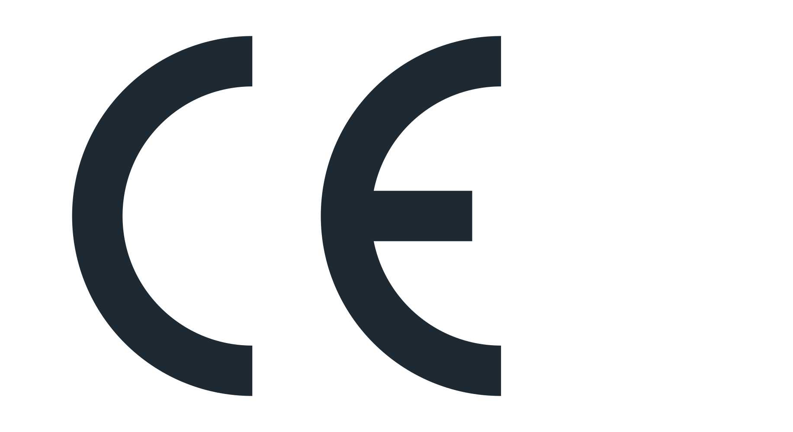
Significa
O fabricante declara que o produto cumpre as regras europeias de segurança, saúde e ambiente.
Não significa
Comissão Europeia, portal A sua Europa (marcação CE) · Regulamento (CE) n.º 765/2008, anexo II · 30 países = Espaço Económico Europeu
O que a União mudou · Se avariar
Cada país pode dar mais do que o mínimo. Espanha e Suécia: 3 anos · Países Baixos: depende da vida útil do produto · Irlanda: até 6 anos.
Quem responde?
A loja onde compraram, mesmo que a marca tenha outra garantia.
Quem prova?
Nos primeiros 2 anos, presume-se que o defeito já existia. Não são vocês que têm de provar.
O que podem pedir?
Reparar ou trocar. Se não for possível: desconto ou o dinheiro de volta.
Diretiva (UE) 2019/771 · Decreto-Lei n.º 84/2021 · Direção-Geral do Consumidor · Centro Europeu do Consumidor
O que a União mudou · Na internet
o teu navegador
1.ª visita: o site guarda um cookie
depois: o navegador devolve-o e o site lembra-se de ti
o site
Necessários
Carrinho de compras, sessão iniciada, idioma. O site pode usá-los sem pedir.
Publicidade e análise
Seguem-te de site em site para criar um perfil. Só com o teu consentimento.
Diretiva relativa à privacidade eletrónica (2002, revista em 2009) · Regulamento Geral sobre a Proteção de Dados (2018) · Diretiva 2002/58/CE, art. 5.º, n.º 3 · Regulamento (UE) 2016/679, arts. 4.º e 7.º · Comité Europeu para a Proteção de Dados, orientações sobre consentimento
O que a União mudou · No bolso
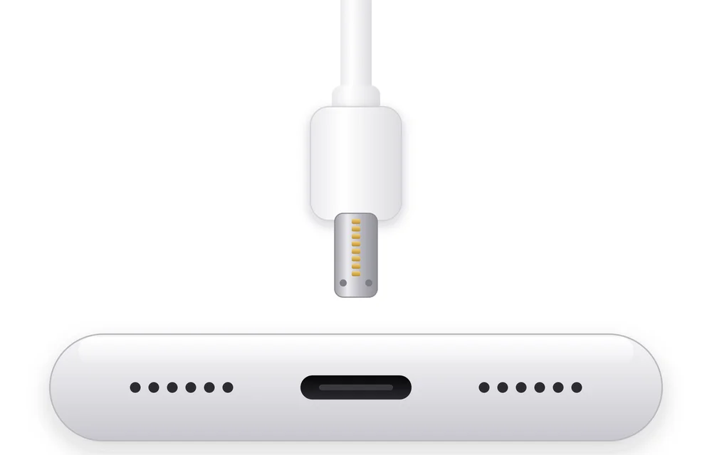
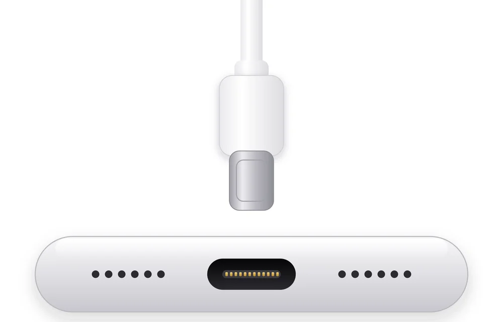
Porquê?
11 000toneladas de lixo eletrónico por ano, de carregadores deitados fora ou nunca usados
250 M€por ano que os consumidores podem poupar em carregadores desnecessários
1 cabopara telemóvel, auscultadores, consola e portátil; podes comprar sem carregador
Uma regra europeia mudou um produto vendido no mundo inteiro.
Comissão Europeia, «EU common charger rules» (28 dez. 2024) · Diretiva (UE) 2022/2380 · Ilustrações originais
Conceito
cidadão: vota nos dois
Governo federal
exército · moeda · política externa
Estado AEstado BEstado CEstado D
estados federados: escolas · polícia · trânsito · justiça penal
Constituição federal divide o poder entre os dois níveis
Federalismo: um Estado em que o poder é dividido entre um governo federal e governos regionais. A Constituição garante a cada nível as suas matérias.
Nos Estados Unidos, o exército e o dólar são federais; a idade para tirar a carta e a pena de morte variam de estado para estado.
Portugal é um Estado unitário: Açores e Madeira têm autonomia, mas não são estados federados.
Constituição da República Portuguesa, art. 6.º · Constituição dos Estados Unidos (1787) · Lei Fundamental alemã (1949)
Quadro comparativo
| Organização das Nações Unidasorganização internacional | União Europeiaunião de Estados | Estado federalex.: Estados Unidos | |
|---|---|---|---|
| O que é | Estados soberanos que cooperam | Estados que partilham parte da soberania | um só Estado soberano |
| Membros | 193 Estados | 27 Estados | 50 estados |
| Documento base | Carta das Nações Unidas (tratado, 1945) | Tratados da União (Lisboa, 2009) | Constituição (1787) |
| As decisões obrigam? | quase só as do Conselho de Segurança | sim: o direito da União prevalece | sim: a lei federal prevalece |
| Parlamento eleito | não | sim: Parlamento Europeu | sim: Congresso |
| Moeda e exército | não tem | euro em 21 países · sem exército | dólar · exército federal |
| Um membro pode sair? | sim | sim (Reino Unido, 2020) | não |
A União fica entre os dois: federal nalgumas linhas, organização de Estados noutras.
Carta das Nações Unidas · Tratado da União Europeia, art. 50.º · Constituição dos Estados Unidos, art. VI · Supremo Tribunal dos Estados Unidos, Texas contra White (1869)
Um país que saiu · 1
O referendo de 2016
50%
Comissão Eleitoral do Reino Unido (resultados de 2016) · Tratado da União Europeia, art. 50.º · Conselho da União Europeia, cronologia do Brexit
Um país que saiu · 2
Comércio
Voltaram as alfândegas, os certificados e a papelada. A longo prazo, o comércio pode ficar cerca de 15% abaixo do que seria (estimativa oficial britânica).
Economia
Produtividade cerca de 4% abaixo do que seria, a longo prazo. É uma estimativa, discutida por outros economistas.
Trabalhar lá
Acabou a livre circulação: um português precisa de visto para trabalhar no Reino Unido.
Viajar
O cartão de cidadão já não chega: é preciso passaporte e, desde 2025, uma autorização eletrónica paga.
Estudar
Saiu do Erasmus+ e as propinas subiram para os europeus. Vai voltar ao Erasmus+ em 2027.
Irlanda do Norte
Regras especiais para não haver fronteira na ilha da Irlanda (Acordo de Windsor, 2023).
Quais destas consequências também atingiriam Portugal? E o que seria diferente?
Office for Budget Responsibility (Reino Unido) · Governo do Reino Unido (vistos e autorização eletrónica de viagem) · Comissão Europeia (Acordo de Windsor; Erasmus+)
Pesquisa · Em pares · 15 minutos · Podem usar inteligência artificial
Na vossa vida
viagens, telemóvel, dinheiro, estudos
No vosso futuro trabalho
trabalhar noutro país, normas, empresas, clientes
No país
estradas, escolas, agricultura, exportações
Escrevam três coisas que mudariam, uma por coluna. Marquem com «?» as de que não têm a certeza.
Se usarem inteligência artificial
A ferramenta ajuda a procurar; quem confirma são vocês.
Fontes sugeridas: european-union.europa.eu · europa.eu/youreurope · Eurostat · Instituto Nacional de Estatística · PORDATA
Verdadeiro ou falso? · 6 minutos
Todos os países da União usam o euro.
Falso: 21 dos 27.
Schengen e União Europeia são a mesma coisa.
Falso: Schengen tem 29 países, e alguns não são da União.
A Bandeira Azul das praias é uma bandeira da União.
Falso: é de uma organização não governamental. A União define a qualidade da água.
Os deputados europeus são eleitos por nós.
Verdadeiro: desde 1979, de cinco em cinco anos.
A marca CE quer dizer que o produto foi feito na Europa.
Falso: o fabricante declara que o produto cumpre as regras europeias, venha de onde vier.
A garantia legal é de 3 anos em todos os países da União.
Falso: o mínimo europeu é de 2 anos; Portugal dá 3 desde 2022.
Fontes: Banco Central Europeu · Comissão Europeia (Schengen) · Fundação para a Educação Ambiental · Parlamento Europeu · Regulamento (CE) n.º 765/2008 · Diretiva (UE) 2019/771
Jogo · 8 perguntas · 20 segundos cada
8 perguntas · 20 segundos cada · respondam de braço no ar
Teclas 1 a 4 escolhem a resposta; Enter passa à seguinte.
Quantos países tem hoje a União Europeia?
21 usam o euro; 29 estão em Schengen; 193 são os membros das Nações Unidas.
O que é a soberania?
A União partilha soberania, não a substitui.
Quem decide sobre a segurança nacional e os exércitos?
O euro, as alfândegas e o comércio externo são só da União.
O que significa a marca CE num produto?
Pode ser vendido em 30 países sem novos testes.
Qual é a garantia legal de um telemóvel comprado em Portugal?
O mínimo europeu é de 2 anos; Portugal dá 3 desde 2022.
Desde quando é obrigatório o carregador USB-C nos telemóveis vendidos na União?
Nos portáteis, desde abril de 2026.
No referendo do Brexit (2016), quantos votaram sair?
72,2 % foi a participação; 48,1 % votaram ficar.
Portugal é um Estado…
Açores e Madeira têm autonomia, mas não são estados federados (Constituição, art. 6.º).
Revisão · Aula 1 · para estudar em casa
Quantos países da União usam o euro?
21 dos 27, desde a entrada da Bulgária em 2026. Os 29 são os países de Schengen.
Quem decide sobre o euro e as alfândegas?
São competências exclusivas da União.
Para usar cookies de publicidade, um site precisa de…
Os cookies de publicidade e análise só com consentimento; e rejeitar tem de ser tão fácil como aceitar.
O telemóvel avariou ao fim de 18 meses. Quem tem de provar que o defeito já existia?
Nos primeiros 2 anos, presume-se que o defeito já existia. E quem responde é a loja.
Qual destas descrições se aplica à União Europeia?
A União fica entre os dois modelos.
Quando saiu formalmente o Reino Unido?
2016 foi o referendo, 2017 o pedido de saída e 2021 o fim da transição.
Aula 2
A Europa em 1945 · a Declaração Schuman · o carvão e o aço
Aula 2 · O contexto
1870
1914
1939
1950
França e Alemanha: três guerras em 70 anos
Três guerras
França e Alemanha combateram-se em 1870, em 1914 e em 1939, em menos de um século.
Um continente em ruínas
Cidades destruídas, milhões de mortos e de refugiados, economias paradas.
Um continente dividido
A Guerra Fria separa o Ocidente, aliado dos Estados Unidos, do Leste, sob a União Soviética.
A pergunta de 1945: como impedir uma nova guerra na Europa?
História · 1
Aliados
e muitos outros países
Eixo
e aliados como a Hungria, a Roménia, a Bulgária
Portugal: neutro, sob a ditadura de Salazar; cedeu a base das Lajes aos Aliados em 1943.
Museu Memorial do Holocausto dos Estados Unidos, enciclopédia (Segunda Guerra Mundial) · Encyclopaedia Britannica
História · 2
Em cada 100 pessoas que viviam no mundo em 1940…
mais de 100 milhõesde militares mobilizados · quase 10 vezes a população de Portugal hoje
60 a 75 milhõesde mortos (estimativas) · mais de metade eram civis
2 bombas atómicasHiroxima e Nagasáqui, agosto de 1945 · a única vez numa guerra; mais de 100 mil mortos
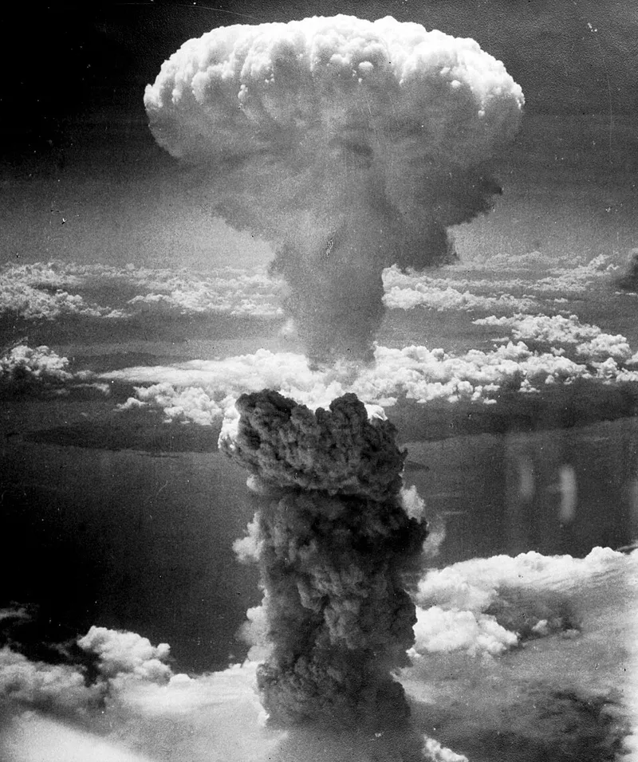
População mundial em 1940: cerca de 2,3 mil milhões.
Estimativas compiladas em «World War II casualties» (Wikipedia, com fontes) · Museu Memorial do Holocausto dos Estados Unidos
História · 3
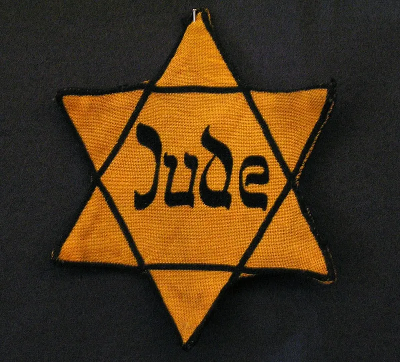
6 milhõesde judeus assassinados: dois em cada três judeus da Europa.
Também ciganos, pessoas com deficiência, prisioneiros soviéticos, polacos, opositores políticos, homossexuais.
Começou com palavras e leis.
Museu Memorial do Holocausto dos Estados Unidos (encyclopedia.ushmm.org) · Raul Hilberg, A Destruição dos Judeus Europeus (1961)
História · 4
Na noite de 9 para 10 de novembro de 1938, sinagogas e lojas de judeus foram destruídas em toda a Alemanha.
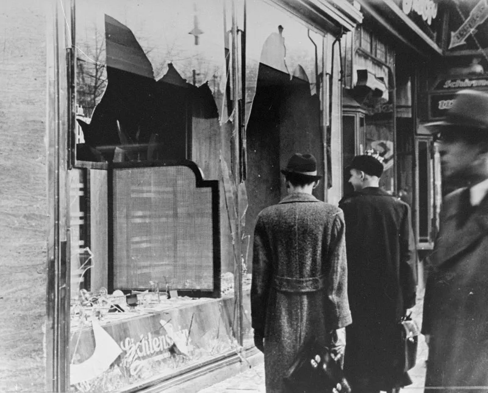
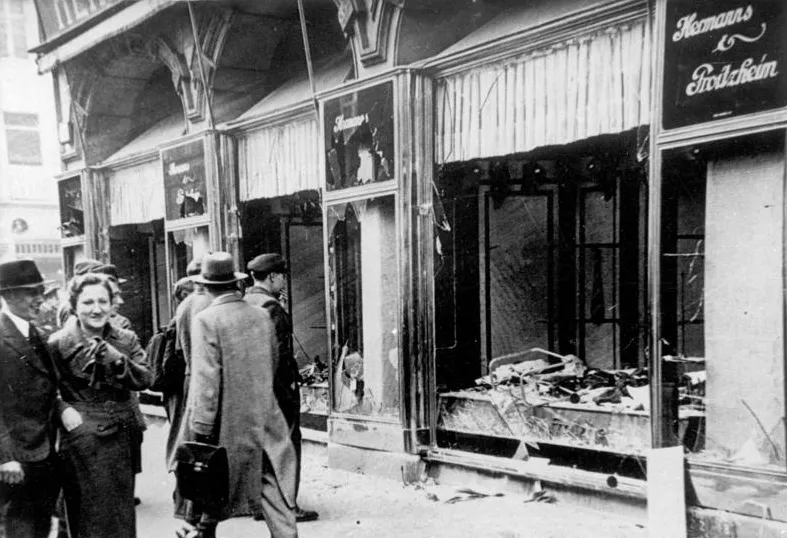
O que fazem as pessoas que passam?
História · 5
O maior campo de concentração e de extermínio nazi, na Polónia ocupada. Foi libertado pelo exército soviético a 27 de janeiro de 1945, hoje o Dia Internacional em Memória das Vítimas do Holocausto.
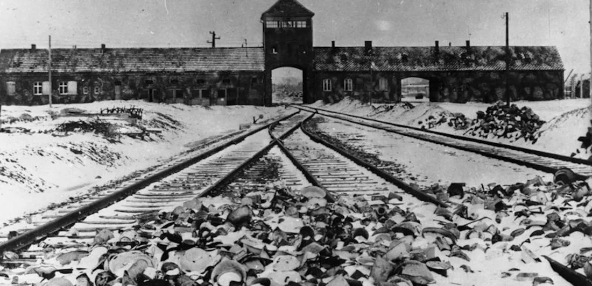
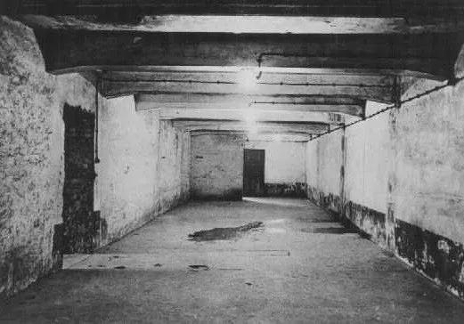
Em Auschwitz-Birkenau e nos outros centros de extermínio com câmaras de gás foram mortas cerca de 2,7 milhões de pessoas.
Museu Memorial do Holocausto dos Estados Unidos (encyclopedia.ushmm.org)
Ciência e ética · 1
A mesma ciência
Fritz Haber (1868–1934)
A ciência é neutra? Quem responde pelo uso de uma descoberta?
Museu Memorial do Holocausto dos Estados Unidos («Gassing operations») · Fundação Nobel (Fritz Haber, 1918)
Ciência e ética · 2
Japão · Unidade 731
Na Manchúria ocupada, até 1945: prisioneiros infetados com doenças, operados sem anestesia, sujeitos a testes de congelação. Pelo menos 3 mil mortos na unidade; centenas de milhares nos ataques com armas biológicas na China. Os Estados Unidos deram imunidade aos responsáveis em troca dos dados.
Alemanha nazi · campos de concentração
Médicos usaram prisioneiros contra a sua vontade: testes de frio e de altitude, infeções, esterilizações, experiências com gémeos em Auschwitz. Em Nuremberga (1946–1947), 23 médicos e responsáveis foram julgados e 16 condenados.
Código de Nuremberga · 1947 · Princípio 1
«O consentimento voluntário do ser humano é absolutamente essencial.»
Daí vêm as regras de hoje: consentimento informado, comissões de ética, Declaração de Helsínquia (1964).
Museu Memorial do Holocausto dos Estados Unidos (experiências médicas nazis; Código de Nuremberga) · Sheldon Harris, Factories of Death (Unidade 731)
Filosofia · O mal
Hannah Arendt
Eichmann em Jerusalém, 1963
A «banalidade do mal»: o mal extremo pode ser feito por pessoas comuns que obedecem e não pensam no que fazem.
Zygmunt Bauman
Modernidade e Holocausto, 1989
Burocracia, divisão do trabalho e técnica: cada um faz uma pequena parte e ninguém se sente responsável pelo todo.
Theodor Adorno
Educação após Auschwitz, 1966
«A exigência de que Auschwitz não se repita é a primeira de todas para a educação.»
Se não foram monstros, o que impediria hoje pessoas comuns de fazer o mesmo?
H. Arendt, Eichmann em Jerusalém (1963) · Z. Bauman, Modernidade e Holocausto (1989) · T. W. Adorno, «Educação após Auschwitz» (1966), tradução livre
A resposta · 1945–1950
Tratado da União Europeia · Artigo 2.º
A União funda-se nos valores do respeito pela dignidade humana, da liberdade, da democracia, da igualdade, do Estado de direito e do respeito pelos direitos do Homem.
Nações Unidas · Museu Memorial do Holocausto dos Estados Unidos · Conselho da Europa · Tratado da União Europeia, art. 2.º
Duas respostas à guerra
Organização das Nações Unidas
1945 · 193 Estados
União Europeia
1951–1993 · 27 Estados
As Nações Unidas tentam impedir a guerra entre Estados separados; a União tenta torná-la impossível, unindo-os.
Carta das Nações Unidas, art. 1.º · Tratado da União Europeia, art. 3.º
Declaração Schuman · 9 de maio de 1950
A Europa não se construirá de uma só vez, nem de acordo com um plano único. Construir-se-á através de realizações concretas que criarão, antes de mais, uma solidariedade de facto.Robert Schuman, ministro dos Negócios Estrangeiros de França
O 9 de maio é hoje o Dia da Europa.
Texto em português no site oficial da União Europeia (european-union.europa.eu)
A ideia de Schuman
França
fronteira
Alemanha
Antes de 1950: cada país controla as suas minas e fábricas, e pode usá-las para fazer armas.«Qualquer guerra entre a França e a Alemanha se tornará não só impensável mas materialmente impossível.»
Tratado de Paris · 1951
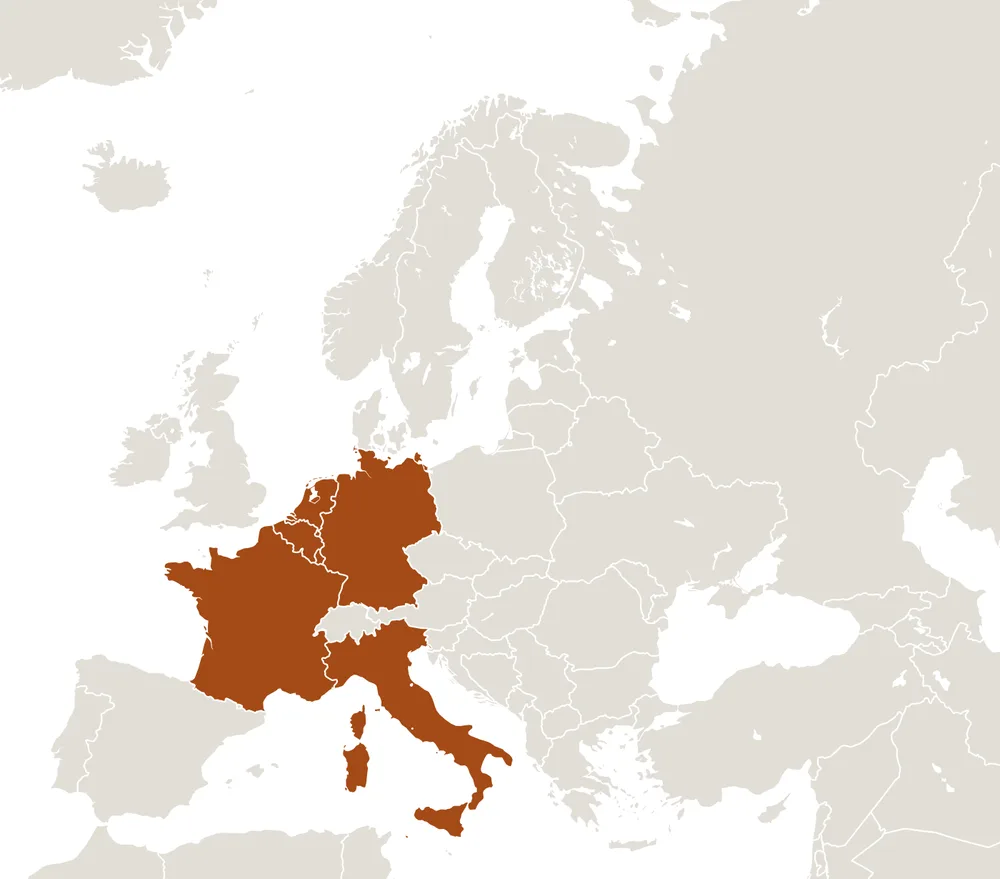
Comunidade Europeia do Carvão e do Aço: os seis fundadores
Eram a matéria da guerra: sem carvão e aço não há tanques, navios nem armas.
Postos em comum, nenhum país se podia armar às escondidas contra os outros.
Pesquisa · Em pares · 15 minutos
Fonte: Declaração Schuman, texto oficial em português em european-union.europa.eu
Jogo · 8 perguntas · 20 segundos cada
8 perguntas · 20 segundos cada · respondam de braço no ar
Teclas 1 a 4 escolhem a resposta; Enter passa à seguinte.
Quantas pessoas morreram na Segunda Guerra Mundial (estimativas)?
Mais de metade eram civis: 3 em cada 100 pessoas que viviam no mundo.
Durante a Segunda Guerra, Portugal…
Em 1943, cedeu a base das Lajes aos Aliados.
Quantos judeus foram assassinados no Holocausto?
Dois em cada três judeus da Europa.
O 27 de janeiro é o Dia Internacional em Memória das Vítimas do Holocausto porque…
Libertado pelo exército soviético.
O que é a «banalidade do mal», para Hannah Arendt?
Eichmann em Jerusalém, 1963.
Em que dia se celebra o Dia da Europa?
O dia da Declaração Schuman, em 1950.
Quantos países fundaram a Comunidade Europeia do Carvão e do Aço?
França, Alemanha Ocidental, Itália, Bélgica, Países Baixos e Luxemburgo.
O que distingue a resposta da União à guerra da resposta das Nações Unidas?
As Nações Unidas tentam impedir a guerra entre Estados que continuam separados.
Revisão · Aula 2 · para estudar em casa
Em que anos se combateram a França e a Alemanha?
Três guerras em menos de um século.
O que propôs a Declaração Schuman?
Começar por uma «realização concreta» que criasse uma solidariedade de facto.
Porquê o carvão e o aço?
Sem carvão e aço não há tanques, navios nem armas; postos em comum, ninguém se arma às escondidas.
Qual é o primeiro princípio do Código de Nuremberga (1947)?
Daí vêm as regras de hoje: consentimento informado e comissões de ética.
Para Hannah Arendt, a «banalidade do mal» quer dizer que…
Eichmann pareceu-lhe um funcionário zeloso, não um monstro.
Que valor vem em primeiro lugar no artigo 2.º do Tratado da União Europeia?
A dignidade humana: a resposta direta ao que se passou nos campos.
Aula 3
Jean Monnet · Robert Schuman e Konrad Adenauer · Winston Churchill · Jacques Delors
A construção europeia
Consultor económico e político francês. Dedicou a sua vida à causa da integração europeia, para restabelecer e manter a paz.
Se os Estados fossem reconstituídos com base na soberania nacional, a paz estaria comprometida: os países europeus seriam demasiado pequenos para garantir aos seus povos prosperidade e desenvolvimento.
Área, em km²
País médio da UE≈ 156 mil
União Europeia≈ 4,2 milhões
China≈ 9,6 milhões
Estados Unidos≈ 9,8 milhões
União Soviética≈ 22,4 milhões
Área da União: Eurostat (4 225 104 km², 27 países). China, Estados Unidos e União Soviética (1991): valores arredondados.
A construção europeia
Robert Schuman
Ministro dos Negócios Estrangeiros de França, entre 1948 e 1952.
Konrad Adenauer
Chanceler da Alemanha (Ocidental), entre 1949 e 1963.
Uma base económica comum, a partir da qual se edificaria uma Europa em paz, unida e próspera.
A construção europeia
Antigo oficial do exército, repórter de guerra e primeiro-ministro britânico: um dos primeiros a propor e defender a criação dos «Estados Unidos da Europa». Defendia que só uma Europa unida poderia assegurar a paz.
Devemos criar uma espécie de Estados Unidos da Europa.Winston Churchill, discurso à juventude académica, Zurique, 1946
Mas Churchill imaginava estes Estados Unidos da Europa sem o Reino Unido lá dentro.
Uma Europa unida com ou sem o Reino Unido: o que diria Churchill hoje?
A construção europeia
Político francês. Foi presidente da Comissão Europeia entre 1985 e 1995.
Foi também impulsionador de políticas estruturais, como a Política Agrícola Comum, da Carta Social Europeia e do programa Erasmus.
A Política Agrícola Comum, criada em 1962, apoia os rendimentos dos agricultores e procura garantir alimentos em quantidade e a preços acessíveis em toda a União. Foi durante décadas a maior fatia do orçamento europeu.
Jogo · 8 perguntas · 20 segundos cada
8 perguntas · 20 segundos cada · respondam de braço no ar
Teclas 1 a 4 escolhem a resposta; Enter passa à seguinte.
Jean Monnet foi o primeiro presidente…
E inspirou a Declaração Schuman.
Robert Schuman era…
Entre 1948 e 1952.
Konrad Adenauer foi chanceler da Alemanha (Ocidental) entre…
Aceitou o Plano Schuman.
Como imaginava Churchill os «Estados Unidos da Europa»?
Discurso de Zurique, 1946.
Em que ano entrou o Reino Unido na Comunidade?
E saiu a 31 de janeiro de 2020.
Jacques Delors presidiu à Comissão Europeia entre…
Ligado ao Ato Único Europeu e ao Mercado Único.
Em que ano começou o Erasmus?
Estudar noutro país europeu.
A Política Agrícola Comum, criada em 1962, serve para…
Foi durante décadas a maior fatia do orçamento europeu.
Revisão · Aula 3 · para estudar em casa
Quem inspirou a Declaração Schuman e presidiu ao primeiro órgão executivo da CECA?
Jean Monnet, consultor económico e político francês.
Que chanceler alemão aceitou o Plano Schuman?
Adenauer, chanceler entre 1949 e 1963.
Quem propôs, em 1946, uma espécie de «Estados Unidos da Europa»?
No discurso de Zurique, em 1946.
Que presidente da Comissão Europeia esteve ligado ao Ato Único Europeu?
Delors presidiu à Comissão entre 1985 e 1995.
Porque achava Monnet que os países europeus não se deviam reconstruir sozinhos?
Comparem a área de um país europeu médio com a dos Estados Unidos ou da China.
O dia 9 de maio é considerado a data de nascimento da União Europeia.
Verdadeiro: o dia da Declaração Schuman, em 1950, hoje o Dia da Europa.
Aula 4
Alargar e aprofundar · os tratados · de seis a vinte e sete países · um friso feito pela turma
Duas formas de crescer
Alargar
mais países
de 6 para 27
Aprofundar
mais coisas em comum
↑ os tratados
Os tratados · De Paris a Lisboa
Paris 1951
Roma 1957
Ato Único 1986
Maastricht 1992
Amesterdão 1997
Nice 2001
Lisboa 2007
Paris 1951 (1952)
Comunidade do Carvão e do Aço: 6 países
Roma 1957 (1958)
Comunidade Económica Europeia: um mercado comum
Ato Único 1986 (1987)
Prepara o mercado único, sem fronteiras para as mercadorias
Maastricht 1992 (1993)
Nasce a União Europeia e a cidadania europeia; caminho para o euro
Amesterdão 1997 (1999)
Schengen entra nos tratados; mais poder ao Parlamento
Nice 2001 (2003)
Prepara as instituições para o alargamento de 2004
Lisboa 2007 (2009)
Carta dos Direitos obrigatória; regra para sair da União
Ano de assinatura e, entre parênteses, de entrada em vigor
Fonte: Parlamento Europeu, fichas temáticas sobre a União Europeia e páginas sobre cada tratado
Os tratados · Momentos-chave
Toquem num tratado para o abrir.
Institui a Comunidade Europeia do Carvão e do Aço (CECA), com França, República Federal da Alemanha, Itália, Países Baixos, Bélgica e Luxemburgo: um mercado comum do carvão e do aço e livre acesso às fontes de produção.
Instituem a Comunidade Económica Europeia (CEE) e a Comunidade Europeia da Energia Atómica (EURATOM). Princípios: proibição de discriminação em razão da nacionalidade, livre circulação das pessoas e uma política económica comum.
Revê o Tratado de Roma, reforma as instituições e concretiza o Mercado Único: um espaço de livre circulação de bens, pessoas, serviços e capitais.
A Comunidade Económica Europeia passa a chamar-se União Europeia. Junta à economia a cooperação política e lança as bases da União Económica e Monetária e da moeda única, o euro.
Reforça a cidadania europeia e o funcionamento democrático das instituições, consagra a não discriminação e a igualdade de oportunidades e faz da União um espaço de liberdade, de segurança e de justiça.
Reforma a estrutura institucional da União para preparar o alargamento seguinte, o de 2004.
Reforça a democracia e torna a União mais eficiente, mais transparente e mais unida. O Parlamento Europeu fica em pé de igualdade com o Conselho da União Europeia na maior parte das decisões.
Manual refletE! (Areal Editores), tema-problema 5.2 · Parlamento Europeu, fichas temáticas sobre a União Europeia
Aprofundar · A torre
Cada bloco é algo que os países passaram a fazer juntos.
Quais destes blocos usaram esta semana?
Ano em que cada medida começou a aplicar-se. Fontes: Parlamento Europeu; Comissão Europeia
Alargamentos · Um clique por etapa
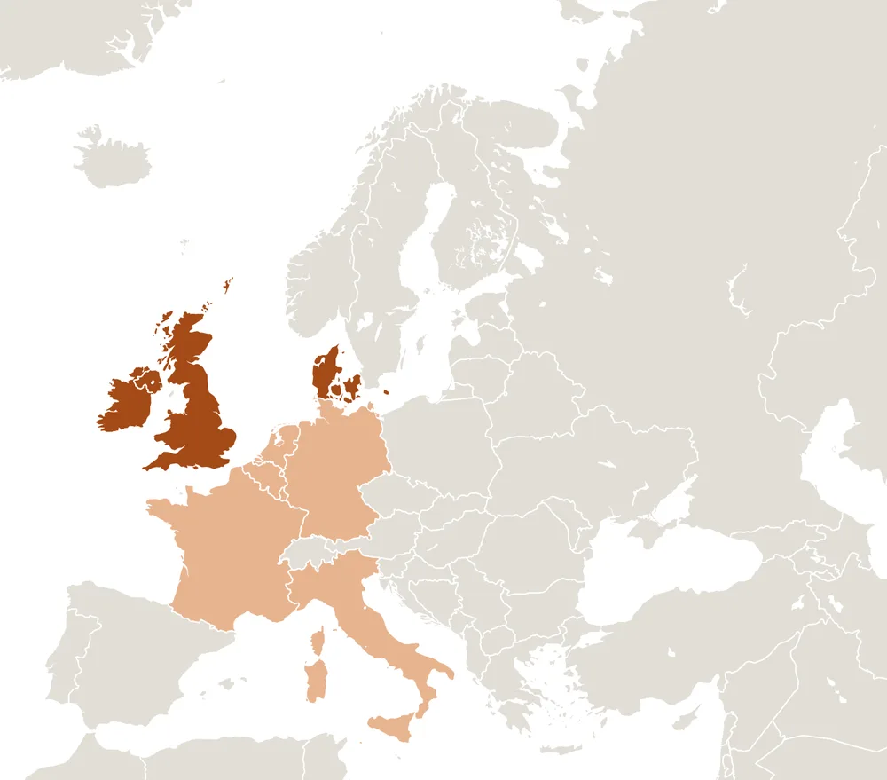
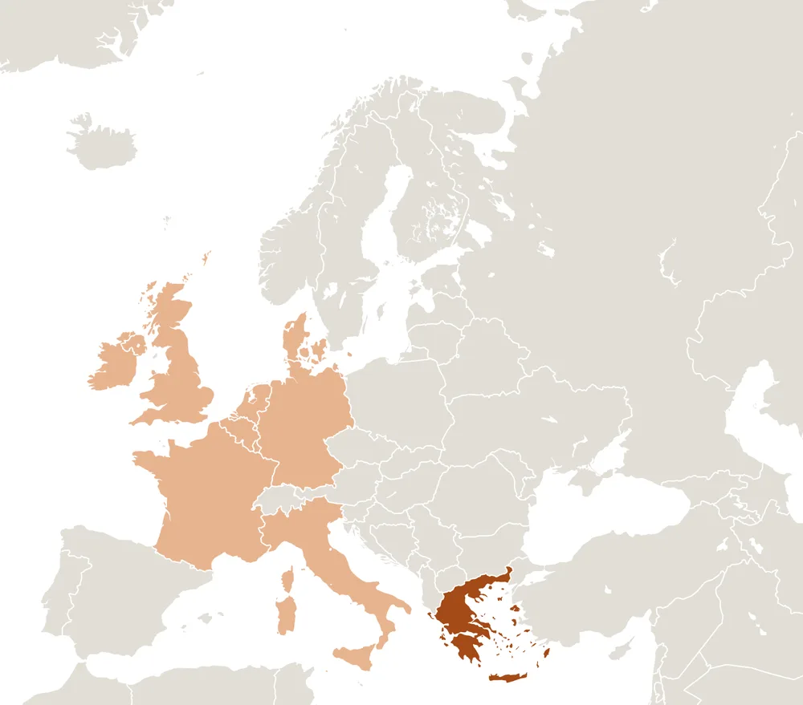
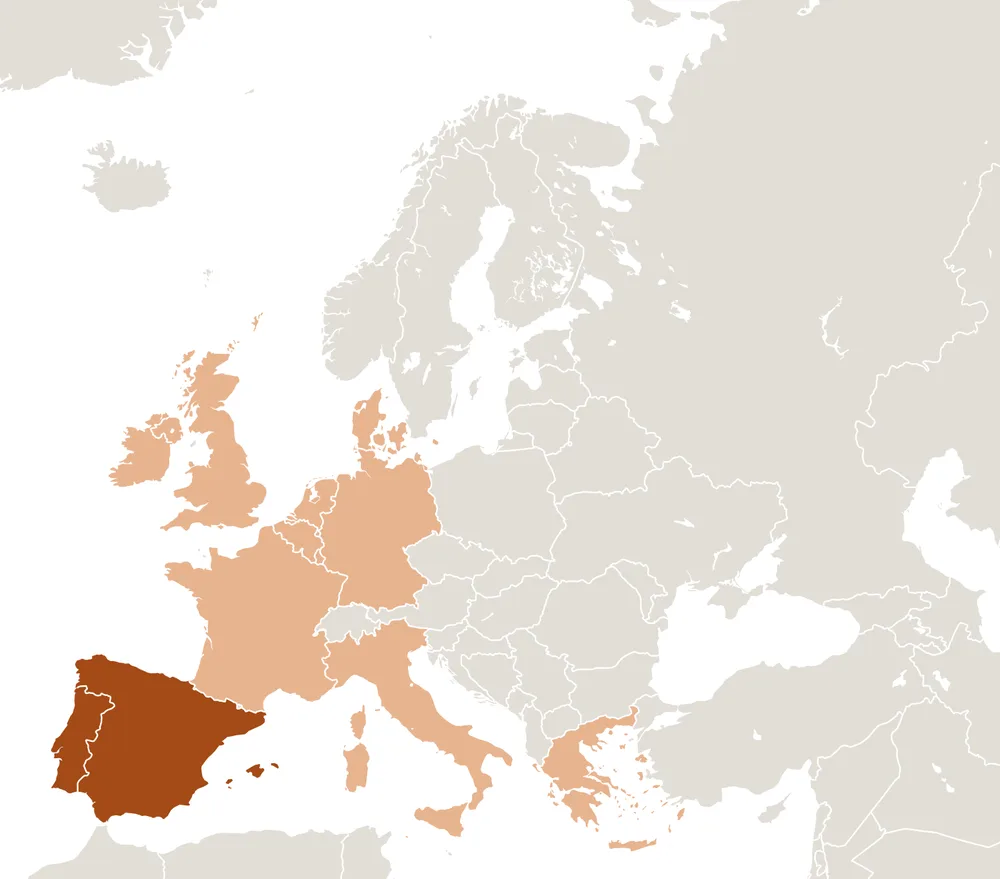
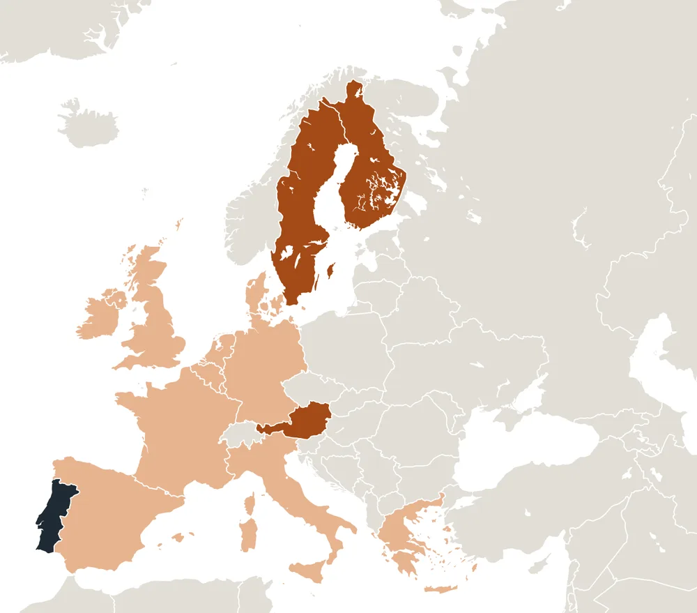
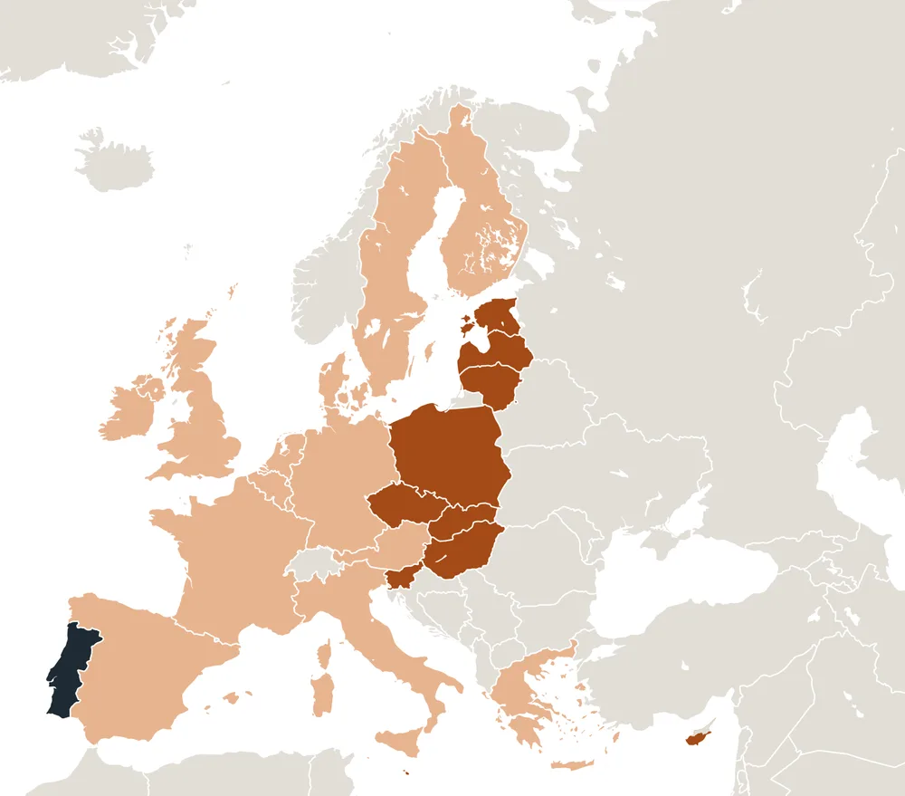
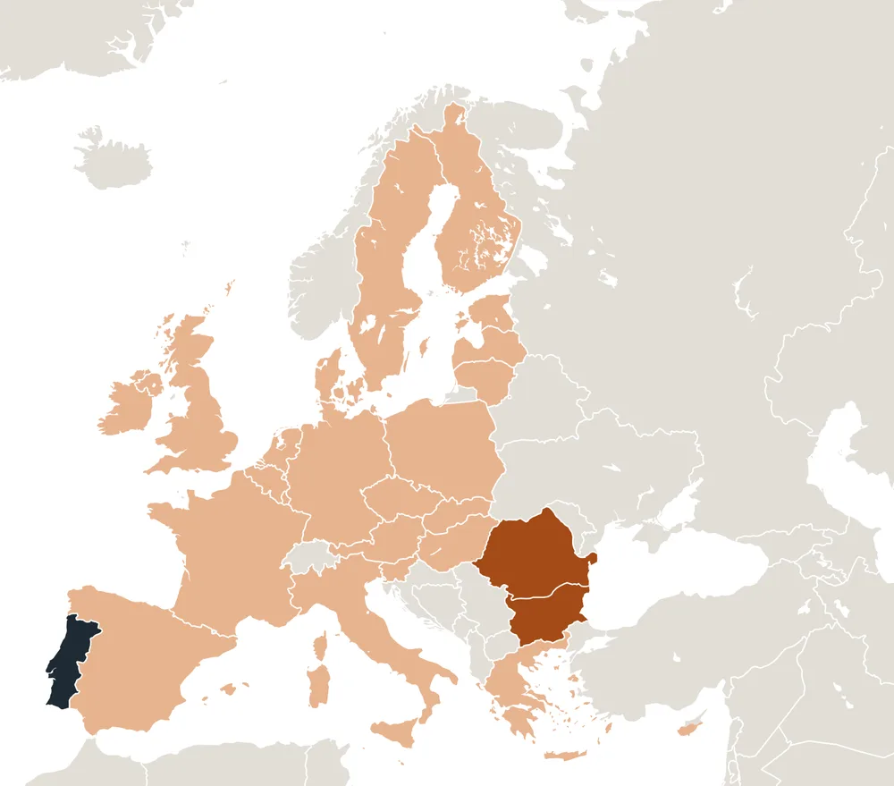
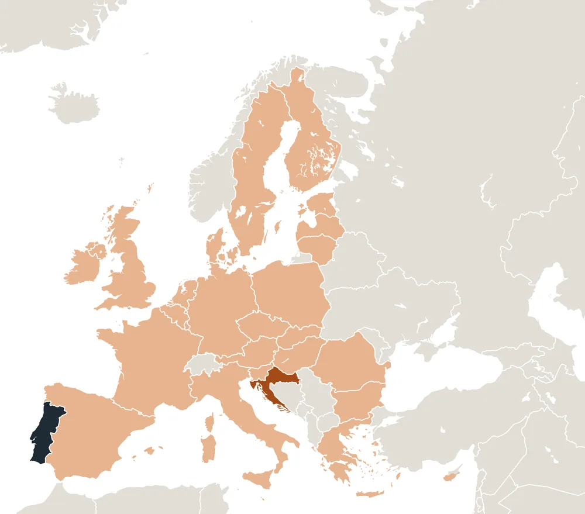
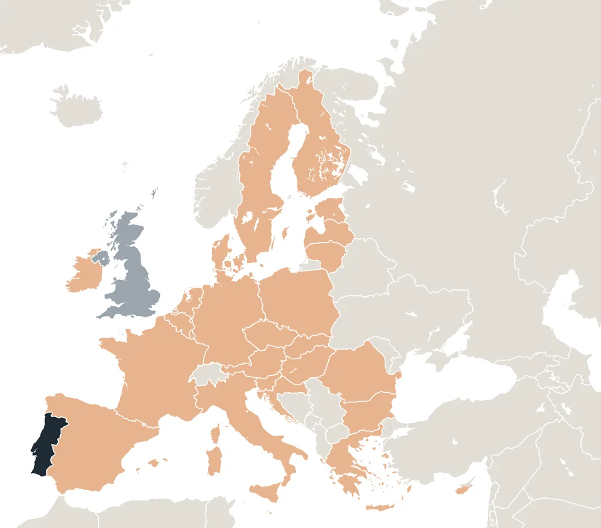
Ano
195819731981198619952004200720132020
Países
6910121525272827
Bélgica, França, Alemanha, Itália, Luxemburgo, Países Baixos+ Dinamarca, Irlanda, Reino Unido+ Grécia+ Portugal e Espanha+ Áustria, Finlândia, Suécia+ 10 países, a maioria do antigo bloco de Leste+ Bulgária e Roménia+ Croácia− Reino Unido (sai a 31 de janeiro)
Fronteiras atuais (em 1958 só a Alemanha Ocidental era membro).
Mapa base: Wikimedia Commons, CC BY-SA 3.0 · Datas: Parlamento Europeu
Alargamentos
6fundadores, em 1951
12membros em 1986, com a entrada de Portugal e Espanha
27membros hoje, depois da saída do Reino Unido, em 2020
Entrar e sair
Sair
Entrar
Condições: democracia, Estado de direito, direitos humanos, economia de mercado e adotar as leis europeias.
Candidatos: Albânia, Bósnia-Herzegovina, Geórgia, Moldávia, Montenegro, Macedónia do Norte, Sérvia, Turquia e Ucrânia.
Fontes: Parlamento Europeu, ficha temática «O alargamento da União»; Tratado da União Europeia, art. 50.º. Situação dos candidatos em 2026: confirmar.
Entrar na União
Só os países que cumprem os critérios de Copenhaga (1993) podem tornar-se membros da União.
Políticos
Instituições estáveis que garantam a democracia, o Estado de direito, os direitos humanos e o respeito e a proteção das minorias.
Económicos
Uma economia de mercado que funcione e que aguente a concorrência e as forças de mercado da União.
Jurídicos
Capacidade de aplicar as regras, normas e políticas da União e de aderir aos objetivos da união política, económica e monetária.
Países candidatos
Muitos estão nos Balcãs Ocidentais. Uns já estão a passar as leis europeias para a lei nacional; outros acabaram de pedir a adesão e ainda têm de provar que cumprem as condições.
O Kosovo é potencial candidato.
Eurocid, Centro de Informação Europeia Jacques Delors · Manual refletE! (Areal Editores), mapa de 2024 · Situação dos candidatos em 2026: confirmar
Aula 4 · Etapas
O número de cada linha é a data de cada grupo no friso da turma.
Pesquisa · Em grupos de três · 17 minutos
1986 · Portugal entra na Comunidade. Portugal assinou o tratado de adesão a 12 de junho de 1985, no Mosteiro dos Jerónimos, e é membro desde 1 de janeiro de 1986. Só entrou nesse ano porque a ditadura acabou em 1974 e a adesão exigia democracia.
Fontes: european-union.europa.eu · eurocid.mne.gov.pt
Jogo · 8 perguntas · 20 segundos cada
8 perguntas · 20 segundos cada · respondam de braço no ar
Teclas 1 a 4 escolhem a resposta; Enter passa à seguinte.
«Alargar» a União quer dizer…
Aprofundar é pôr mais coisas em comum.
Os Tratados de Roma (1957) criaram…
E a Comunidade Europeia da Energia Atómica.
Que tratado preparou as instituições para o alargamento de 2004?
Assinado em 2001, em vigor em 2003.
Desde quando elegemos diretamente o Parlamento Europeu?
De cinco em cinco anos.
Em que ano chegaram aos bolsos as notas e moedas de euro?
Hoje, 21 dos 27 países usam o euro.
Os critérios de Copenhaga (1993) para entrar na União são…
Democracia, economia de mercado e capacidade de aplicar as regras da União.
Onde assinou Portugal o tratado de adesão, a 12 de junho de 1985?
Membro desde 1 de janeiro de 1986.
Porque é que Portugal não podia entrar antes de 1974?
A ditadura acabou a 25 de Abril de 1974.
Revisão · Aula 4 · para estudar em casa
Que tratado fez nascer a União Europeia e a cidadania europeia?
Maastricht: assinado em 1992, em vigor desde 1 de novembro de 1993.
Desde quando é Portugal membro?
Desde 1 de janeiro de 1986, com a Espanha.
Qual foi o maior alargamento?
Dez países, a maioria do antigo bloco de Leste, depois do fim da Guerra Fria.
Que tratado criou a regra para um país sair da União?
O artigo 50.º, criado pelo Tratado de Lisboa e usado pelo Reino Unido.
Porque é que cada tratado tem duas datas?
A ratificação faz-se no parlamento ou por referendo.
Aprofundar quer dizer juntar mais países.
Falso: alargar é juntar mais países; aprofundar é pôr mais coisas em comum.
Aula 5
Quem manda na União? · as quatro instituições principais · como nasce uma lei europeia · os outros órgãos
Quadro institucional
Os poderes de cada instituição estão definidos nos tratados, nos quais se baseia toda a ação da União.
Conselho Europeu
Os chefes de Estado ou de Governo e um presidente a tempo inteiro.
Dá a direção e as prioridades políticas gerais
Parlamento Europeu
Deputados eleitos de cinco em cinco anos, por sufrágio universal direto.
A voz dos cidadãos
Conselho da União Europeia
Um ministro de cada país, conforme o assunto (por exemplo, os ministros do Ambiente).
A voz dos governos
Comissão Europeia
27 comissários, um por país, com um mandato de cinco anos; politicamente independente.
O interesse da União no seu conjunto
Atenção aos nomes parecidos: o Conselho Europeu (os líderes) e o Conselho da União Europeia (os ministros) são instituições da União; o Conselho da Europa é outra organização, que não pertence à União.
Manual refletE! (Areal Editores), tema-problema 5.2 · Tratado da União Europeia, art. 13.º
Quadro institucional
Depois: o Tribunal de Justiça
Interpreta o direito da União e garante que é aplicado da mesma forma em todos os países.
Um exemplo que já conhecem
O carregador comum USB-C: proposto pela Comissão, aprovado pelo Parlamento e pelo Conselho em 2022 (Diretiva (UE) 2022/2380).
Tratado sobre o Funcionamento da União Europeia, art. 294.º (processo legislativo ordinário) · Diretiva (UE) 2022/2380
Quadro institucional
Toquem numa instituição para ver o que faz.
A única instituição onde estão representados os cidadãos, através de eurodeputados eleitos de cinco em cinco anos. Desde o Tratado de Lisboa, aprova ou rejeita acordos internacionais, decide sobre todo o orçamento e legisla em mais de 40 domínios.
Tem três sedes: Estrasburgo (sessões plenárias), Bruxelas e Luxemburgo (serviços administrativos).
Um representante de cada governo; cada país envia o ministro da matéria em discussão. Não tem membros permanentes.
A mais alta entidade política da União. Cada país é representado pelo seu dirigente, e a voz de todos tem o mesmo peso; tem um presidente a tempo inteiro.
O órgão executivo da União, politicamente independente: 27 comissários, um por país, com mandato de cinco anos. O presidente é indicado pelo Conselho Europeu e toda a equipa tem de ser aprovada pelo Parlamento.
Manual refletE! (Areal Editores), tema-problema 5.2
Quadro institucional
Tribunal de Justiça da União Europeia
Luxemburgo · um juiz por país no Tribunal de Justiça, dois no Tribunal Geral
Interpreta o direito da União, garante que é cumprido e resolve conflitos entre instituições, países e particulares.
Tribunal de Contas Europeu
Luxemburgo · desde 1977 · 27 membros
Controla a execução do orçamento e verifica, com auditorias, se os fundos são bem usados. Não julga: avisa o organismo antifraude (OLAF).
Banco Central Europeu
Frankfurt · desde 1998
Gere o euro, emite as notas, decide as taxas de juro e mantém a inflação controlada.
E o Tribunal Europeu dos Direitos Humanos, em Estrasburgo? Faz cumprir a Convenção Europeia dos Direitos Humanos, mas pertence ao Conselho da Europa, não à União.
Manual refletE! (Areal Editores), tema-problema 5.2 · Conselho da Europa (Tribunal Europeu dos Direitos Humanos)
Em pares · 8 minutos
Arrastem cada tarefa para a instituição certa e carreguem em «Verificar».
Parlamento Europeu
Conselho da UE
Comissão Europeia
Conselho Europeu
Pesquisa · Individual · 8 minutos
António Costa, antigo primeiro-ministro de Portugal, preside ao Conselho Europeu desde 1 de dezembro de 2024. O mandato é de dois anos e meio, renovável uma vez (Tratado da União Europeia, art. 15.º). Confirmem no site do Conselho se o mandato já foi renovado.
Conselho Europeu (consilium.europa.eu) · Tratado da União Europeia, art. 15.º
Jogo · 8 perguntas · 20 segundos cada
8 perguntas · 20 segundos cada · respondam de braço no ar
Teclas 1 a 4 escolhem a resposta; Enter passa à seguinte.
Quem propõe as leis europeias?
Só a Comissão pode propor.
O Conselho Europeu reúne…
Dá a direção e as prioridades políticas gerais.
O Conselho da União Europeia reúne…
É a voz dos governos.
Como são escolhidos os deputados do Parlamento Europeu?
É a voz dos cidadãos.
O Conselho da Europa é…
Atenção aos nomes parecidos.
Uma diretiva europeia…
O regulamento é que se aplica diretamente.
Quem interpreta o direito da União e garante que é aplicado da mesma forma?
Fica no Luxemburgo.
Quem preside ao Conselho Europeu desde 1 de dezembro de 2024?
Mandato de dois anos e meio, renovável uma vez. Ursula von der Leyen preside à Comissão.
Aula 6
O que é ser cidadão europeu · direitos · a Carta dos Direitos Fundamentais · deveres · cidadania ativa
Conceito
É cidadão da União qualquer pessoa que tenha a nacionalidade de um Estado-Membro. A cidadania da União é complementar da cidadania nacional e não a substitui.
Quem decide quem é português é Portugal: a nacionalidade, e portanto a cidadania europeia, é atribuída e retirada por cada Estado-Membro.
Tratado de Amesterdão (1997), art. 17.º · Manual refletE! (Areal Editores), tema-problema 5.2
Direitos e deveres da cidadania europeia
Quais destes direitos já usaram, ou vão usar em breve?
Eurocid, Centro de Informação Europeia Jacques Delors · Tratado sobre o Funcionamento da União Europeia, arts. 20.º a 24.º
Estudo de caso
Carta dos Direitos Fundamentais54 artigos
Reúne num só documento os direitos civis, políticos, económicos, sociais e culturais, que antes estavam dispersos, e ainda o direito à proteção de dados.
Com o Tratado de Lisboa (em vigor desde 2009), passou a ter o mesmo valor que os tratados: os Estados-Membros e as instituições são obrigados a cumpri-la.
Carta dos Direitos Fundamentais da União Europeia (2000; obrigatória desde 2009) · Manual refletE! (Areal Editores)
Direitos e deveres da cidadania europeia
Só há direitos se forem cumpridos os deveres: a relação é de reciprocidade.
Todos têm direito à vida.Dever de não atentar contra a vida de outrem.
Todos têm direito à integridade física e mental.Dever de respeitar a integridade dos outros.
Todos têm direito à vida privada e familiar.Dever de não atentar contra a privacidade de outrem.
Assumir a identidade europeia
Compreender a história; dever de identidade e de defesa.
Aplicar os valores europeus
Partilhar, trabalhar e participar na democracia.
Reclamar o direito à justiça
Contribuir para uma ordem mundial mais justa.
Fundação Francisco Manuel dos Santos · Manual refletE! (Areal Editores), tema-problema 5.2
Cidadania ativa
Os cidadãos podem pôr um assunto na agenda europeia e pedir à Comissão uma nova lei, nas áreas em que a União decide.
10iniciativas bem-sucedidas até maio de 2024, por exemplo «End the Cage Age», «Stop Finning», «Save Bees and Farmers»
12 975 370assinaturas recolhidas por essas dez iniciativas
Fórum da Iniciativa de Cidadania Europeia (2024) · Regulamento (UE) 2019/788 · Manual refletE! (Areal Editores)
Pesquisa · Em pares · 12 minutos
As iniciativas abertas e o número de assinaturas mudam todas as semanas: confirmem no site oficial. Peçam a cada par que mostre a página da iniciativa escolhida e justifique a escolha.
Site oficial da Iniciativa de Cidadania Europeia (citizens-initiative.europa.eu)
Jogo · 8 perguntas · 20 segundos cada
8 perguntas · 20 segundos cada · respondam de braço no ar
Teclas 1 a 4 escolhem a resposta; Enter passa à seguinte.
Quem é cidadão da União?
É complementar da cidadania nacional e não a substitui.
Estás num país onde Portugal não tem embaixada. Que direito tens?
Um dos direitos da cidadania europeia.
Quantos artigos tem a Carta dos Direitos Fundamentais?
Organizados em seis títulos.
Qual destes é um dos seis títulos da Carta?
Dignidade, Liberdades, Igualdade, Solidariedade, Cidadania, Justiça.
Desde quando é a Carta obrigatória para os Estados e as instituições?
Passou a ter o mesmo valor que os tratados.
A cada direito corresponde um dever. Que relação é esta?
Só há direitos se forem cumpridos os deveres.
Quem lança uma Iniciativa de Cidadania Europeia?
Depois recolhem 1 milhão de assinaturas.
Quantas iniciativas tinham sido bem-sucedidas até maio de 2024?
Por exemplo, «End the Cage Age».
Revisão · Aula 6 · para estudar em casa
A cidadania europeia substitui a cidadania portuguesa.
Falso: é complementar da cidadania nacional e não a substitui.
A cidadania europeia foi instituída pelo Tratado de Maastricht, em 1992.
Verdadeiro.
É a União Europeia que decide quem tem nacionalidade portuguesa.
Falso: a nacionalidade é atribuída e retirada por cada Estado-Membro.
Um português pode votar nas eleições municipais do país da União onde vive.
Verdadeiro: é um dos direitos da cidadania europeia.
Desde o Tratado de Lisboa, a Carta dos Direitos Fundamentais tem o mesmo valor que os tratados.
Verdadeiro: é obrigatória desde 2009.
Quantas assinaturas são precisas para uma Iniciativa de Cidadania Europeia?
E a Comissão tem de responder.
Aula 7
Ameaças internas e externas · os grandes desafios · a globalização · os desafios ambientais · role-playing
Em pares · 6 minutos
Um mercado único, uma moeda, a livre circulação, a cidadania europeia: muitos sucessos. Mas há problemas sem respostas fáceis. Arrastem cada ameaça para a sua caixa e carreguem em «Verificar».
Internas
Externas
Manual refletE! (Areal Editores), tema-problema 5.2
Os desafios da União
União Europeia
Eurocid, Centro de Informação Europeia Jacques Delors · Manual refletE! (Areal Editores)
Os desafios da União
Com os Estados Unidos e a China, a União é uma das maiores potências do comércio mundial: mais de 15% das exportações do mundo.
Vantagens
Riscos
A resposta da União: o Fundo Europeu de Ajustamento à Globalização (2006) apoia quem perdeu o emprego por causa destas mudanças.
Manual refletE! (Areal Editores), tema-problema 5.2
Trabalho de projeto interdisciplinar
As alterações climáticas não atingem todas as regiões da mesma maneira. Onde fica Portugal?
Ártico
Temperatura a subir muito acima da média; menos gelo no mar e na Gronelândia; risco para a biodiversidade e para as populações locais.
Região boreal
Mais chuvas fortes, menos neve; florestas com mais pragas; colheitas maiores e menos energia gasta em aquecimento.
Região atlântica
Mais chuvas fortes e cheias; tempestades de inverno mais destrutivas.
Região continental
Mais fenómenos extremos; menos chuva no verão; mais cheias e incêndios.
Zonas de montanha
Glaciares a encolher; espécies a subir para altitudes maiores; menos turismo de inverno.
Zonas costeiras e mares
Subida do nível do mar; oceanos mais quentes e ácidos; mais zonas marinhas mortas.
Região mediterrânica · Portugal
Mais calor extremo e secas; menos água para a agricultura; mais incêndios florestais; mais mortes em ondas de calor.
Agência Europeia do Ambiente · Parlamento Europeu · Manual refletE! (Areal Editores)
Role-playing · Toda a turma
Uma forma lúdica de apresentar pontos de vista, organizar o discurso e enfrentar a interação dos colegas.
Mediador
Gere o tempo e dá a palavra a todos. Não dá opiniões.
Secretários
Registam as principais ideias, um por cada papel.
Oradores
Argumentam no papel que lhes calhou.
Papéis dos oradores
uma petrolífera · uma indústria de celulose · associações ecologistas · empresários agropecuários · um país industrializado · um país em desenvolvimento · produtores de eletricidade · madeireiros · especialistas em clima · habitantes
Manual refletE! (Areal Editores), «explora!»: trabalho de projeto interdisciplinar
Pesquisa · Em pares · 15 minutos
Comparem as notícias dos vários pares: quais as ameaças que aparecem mais vezes? Registem as conclusões no quadro, separando as medidas que dependem da União das que dependem de cada país.
Parlamento Europeu, notícias (europarl.europa.eu) · Manual refletE! (Areal Editores), atividade 17
Jogo · 8 perguntas · 20 segundos cada
8 perguntas · 20 segundos cada · respondam de braço no ar
Teclas 1 a 4 escolhem a resposta; Enter passa à seguinte.
A saída do Reino Unido (Brexit) é uma ameaça…
Veio de dentro da própria União.
A guerra na Ucrânia é uma ameaça…
Trouxe crise energética e alimentar e inflação.
As desigualdades entre os Estados-Membros são uma ameaça…
Tal como o envelhecimento da população.
O que é a deslocalização?
Um dos riscos da globalização.
Uma vantagem da globalização é…
Também: acesso a mercados no mundo inteiro.
Na região mediterrânica, onde fica Portugal, as alterações climáticas trazem…
E menos água para a agricultura.
E na região atlântica?
E tempestades de inverno mais destrutivas.
No role-playing sobre o clima, o mediador…
Os secretários é que registam as ideias.
Revisão · Aula 7 · para estudar em casa
Que parte das exportações mundiais vem da União?
Com os Estados Unidos e a China, é uma das maiores potências do comércio mundial.
Para que serve o Fundo Europeu de Ajustamento à Globalização?
Foi criado em 2006.
Até quando quer a União ter um impacto neutro no clima?
É o objetivo do Pacto Ecológico Europeu.
O envelhecimento da população é uma ameaça interna à União.
Verdadeiro: põe em risco os sistemas de segurança social e a competitividade.
As alterações climáticas atingem todas as regiões da Europa da mesma maneira.
Falso: no Mediterrâneo, por exemplo, há mais secas e incêndios; no Norte, mais chuvas fortes.
Aula 8
O que é um Estado · o que é uma nação · a crise do Estado-nação · tipos de federalismo · que tipo de coisa é a União?
O que é um Estado?
«O Estado é a comunidade humana que, dentro de um território, reclama com êxito o monopólio do uso legítimo da força física.»Max Weber, A Política como Vocação, 1919 (tradução livre)
Teste: a União Europeia é um Estado? Tem exército próprio? Polícia própria? Pode mudar as suas regras sem o acordo de todos os países?
Fontes: Weber (1919); teoria dos três elementos (Jellinek); Convenção de Montevideu (1933)
O que é uma nação?
Conceção objetiva
O que temos em comum: língua, origem, religião, cultura.
Herder, Fichte (romantismo alemão)
Conceção subjetiva
O que queremos em comum: memórias partilhadas e vontade de viver juntos.
Renan, 1882
«A existência de uma nação é um plebiscito de todos os dias.»Ernest Renan, O que é uma nação?, 1882
Comunidade imaginada: nunca conheceremos a maioria dos outros portugueses, e no entanto sentimo-nos ligados a eles.
Benedict Anderson, 1983
Fontes: Renan, conferência na Sorbonne, 11 de março de 1882; Anderson, Comunidades Imaginadas, 1983
Em pares · 8 minutos
Arrastem cada cartão para a coluna que acharem certa.
Essencial
Ajuda
Não interessa
Estado-nação
O Estado organiza; a nação identifica.Ideal moderno: a cada nação, um Estado; a cada Estado, uma nação.
A crise do Estado-nação
De cima: mercados globais, clima, pandemias, internet, União Europeia
De lado: migrações e identidades múltiplas
Estado-nação
De baixo: regiões que querem mais autonomia (Escócia, 2014; Catalunha, 2017)
Está em crise.
Os grandes problemas já não cabem nas fronteiras; a democracia tem de ir além delas.
Jürgen Habermas, A Constelação Pós-Nacional, 1998
Está a mudar.
A integração europeia não enfraqueceu os Estados: salvou-os, dando-lhes prosperidade.
Alan Milward, O Resgate Europeu do Estado-Nação, 1992
Como se organiza o poder
UE?
mais poder no centromais poder nos Estados
Estado unitário
Um só centro de poder; pode haver regiões autónomas.
Portugal, França
Federação
Um Estado: o poder divide-se entre o centro e os Estados federados, pela Constituição.
EUA, Alemanha, Suíça, Brasil
Confederação
Estados soberanos ligados por um tratado; o centro tem poucos poderes.
EUA, 1781–1789
Onde colocariam a União Europeia?Traços federais: Parlamento eleito, Tribunal de Justiça, euro, o direito europeu prevalece.
Traços confederais: tratados por unanimidade, sem exército próprio, pode-se sair.
Uma «associação de Estados»: nem Estado federal, nem simples aliança.
Tipos de federalismo
Fontes: Stepan (1999), Journal of Democracy 10(4); Grodzins (bolo mármore)
Quem decide o quê na União?
Exclusivas
Só a União decide
TFUE, art. 3.º
Partilhadas
A União e os Estados
TFUE, art. 4.º
De apoio
Os Estados decidem; a União ajuda
TFUE, art. 6.º
Subsidiariedade: fora das competências exclusivas, a União só age quando faz melhor do que os Estados sozinhos.
Tratado sobre o Funcionamento da União Europeia (TFUE), arts. 3.º, 4.º e 6.º; Tratado da União Europeia, art. 5.º
Três ideias de Europa
Federalistas
Uma federação europeia, com um governo comum.
Manifesto de Ventotene, Spinelli e Rossi, 1941 · Churchill, Zurique, 1946
Funcionalistas
Avançar setor a setor, com realizações concretas.
Jean Monnet · Robert Schuman, 1950
Intergovernamentalistas
Cooperação entre Estados que continuam soberanos.
De Gaulle, anos 1960 · os defensores do Brexit
«Devíamos ter uns Estados Unidos da Europa.» Concordam?
Pesquisa · Individual · 8 minutos
Artigo 6.º: o Estado é unitário e respeita o regime autonómico insular. As regiões autónomas dos Açores e da Madeira têm governo e parlamento próprios, mas a sua autonomia é concedida pela Constituição do Estado português: não são estados federados.
Constituição da República Portuguesa, art. 6.º (parlamento.pt)
Jogo · 8 perguntas · 20 segundos cada
8 perguntas · 20 segundos cada · respondam de braço no ar
Teclas 1 a 4 escolhem a resposta; Enter passa à seguinte.
Quais são os três elementos do Estado?
E, para Weber, o monopólio do uso legítimo da força.
Na conceção objetiva, a nação é…
Para Renan (conceção subjetiva), é o que queremos em comum.
O que é uma «comunidade imaginada» (Benedict Anderson)?
Comunidades Imaginadas, 1983.
Qual destes é um exemplo de nação sem Estado?
Repartido por vários países.
Para Alan Milward, a integração europeia…
Para Habermas, o Estado-nação está em crise.
Uma confederação é…
Exemplo: os Estados Unidos entre 1781 e 1789.
O que diz o princípio da subsidiariedade?
Tratado da União Europeia, art. 5.º.
Os funcionalistas, como Monnet e Schuman, queriam…
Os federalistas queriam uma federação; os intergovernamentalistas, só cooperação.
Revisão · Aula 8 · para estudar em casa
Para Max Weber, o Estado reclama o monopólio do uso legítimo da força física.
Verdadeiro: só o Estado pode usar a força (polícia, tribunais, exército), e de acordo com as leis.
A União Europeia tem exército próprio.
Falso: os exércitos são nacionais. É um dos traços confederais da União.
A Suíça, apesar do nome oficial de Confederação, é hoje uma federação.
Verdadeiro.
Para Ernest Renan, a existência de uma nação é…
Conceção subjetiva: memórias partilhadas e vontade de viver juntos.
Em que tipo de competência está o roaming (mercado interno)?
O mercado interno é uma competência partilhada.
E o Erasmus+ (educação)?
A educação, a juventude e o desporto são competências de apoio: os Estados decidem, a União ajuda.
Como chamou o Tribunal Constitucional alemão à União (1993)?
«Staatenverbund»: nem Estado federal, nem simples aliança.
Para levar destas aulas
Próxima semana: quem manda na União? Parlamento, Comissão e Conselho.
Fontes